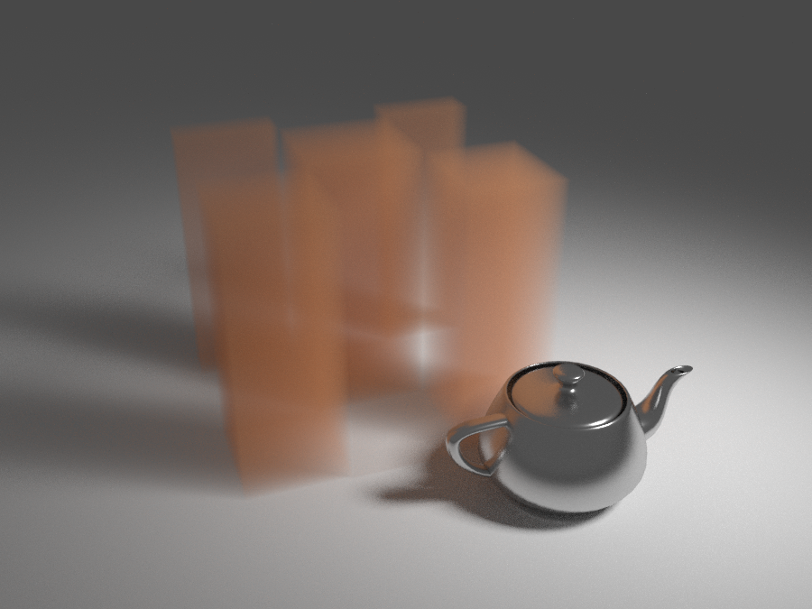

VRayEnvironmentFog
This page provides information on the V-Ray Environment Fog Atmospheric Effect.
Overview
VRayEnvironmentFog is an atmospheric effect that allows the simulation of participating media like fog, atmospheric dust and so. Volumetric properties can be determined by 3D texture maps. The atmospheric effect can also be confined with atmospheric gizmo helper objects.
UI Path: Rendering menu > Environment > click Add...
Rendering menu > Environment > click Add > select VRayEnvironmentFog

General parameters
Fog color – Defines the color of the fog when it is illuminate by light sources. You can also use a texture map to drive the fog color. For more information, see The Fog Color example below.
Fog distance – Controls the fog density. Larger values make the fog more transparent, while smaller values make it more dense. You can also control the density with a texture map. For more information, see The Fog Distance example below.
Fog transparency – Controls the color of the volumetric shadows and the tint for the objects seen through the fog. Brighter colors make the fog more transparent, while darker colors make it more dense at a distance given by the Fog distance parameter. For more information, see The Fog Transparency example below.
Fog emission – Controls the fog emission (self-illumination). You can use this parameter to substitute the ambient illumination inside the fog, instead of using GI. For more information, see The Fog Emission example below.
Scatter GI – When on, the fog also scatters global illumination. Note that this can be quite slow. In many cases, global illumination within the fog can be substituted with a simple emission term. When this option is on, the currently selected global illumination algorithm in the V-Ray settings is used to accelerate GI inside the volume (e.g. the irradiance map, light cache or brute-force ).
Scatter bounces – When Scatter GI is enabled, this controls the number of GI bounces that are calculated inside the fog. For more information, see The Scatter GI and Scatter Bounces example below.
Fog height – If no atmospheric gizmos are specified, the fog is assumed to start from a certain Z-level height and continue downward indefinitely. This parameter determines the starting point along the Z-axis. If there are atmospheric gizmos listed in the Nodes section, this parameter is ignored. For more information, see The Fog Height example below.
Sampling parameters
VRayEnvironmentFog can use either of two algorithms to calculate volumetric lighting. The first algorithm is a simple exponential sampling scheme, which is used when there are no texture maps specified. In this mode, VRayEnvironmentFog takes a number of random points inside the volume and calculates the volumetric lighting at those points. The second algorithm is a raymarching scheme, which is used when any of the volume properties are mapped with a texture. In that case, VRayEnvironmentFog traverses the fog volume in small steps, calculates the volume properties at each step and computes the volume lighting accordingly.
Exponential sampler – This sampler is used when there are no texture maps specified, in which case the volume properties are the same everywhere.
Raymarching sampler
This sampler is used when any of the fog properties (color, density, or emission) is mapped with a 3D texture. The sampler steps through the volume, evaluating volumetric textures and lighting, until it leaves the volume (if there are atmospheric gizmos specified), or until the accumulated volume transparency falls below a certain cut-off threshold, or until a specified number of maximum steps is reached. For more information, see The Sampling Parameters (raymarcher with textures) example below.
Step size – Determines the size of one step through the volume. Smaller steps produce more accurate results but are slower to render. In general, dense volumes require smaller step sizes than more transparent volumes. In practice, step sizes that are two to three times smaller than the Fog distance parameter work well.
Texture samples – Determines the number of texture samples for each step through the volume. This allows to sample textures more accurately than the volumetric lighting. It is useful in cases where the textures vary much faster than the lighting itself (e.g. for detailed fractal textures).
Cutoff threshold – Controls when the raymarcher stops traversing the volume. If the accumulated volume transparency falls below this threshold, the volume is considered opaque and tracing is aborted. Higher values make the rendering faster but may introduce artifacts.
Max steps – Specifies the maximum number of steps through the volume.
Gizmo falloff radius – When the fog effect is contained within a gizmo this option allows you to specify a falloff radius for it. This way the fog effect does not have sharp edges at the edges of the gizmo.
Gizmo falloff mode – Allows you to chose between two different falloff modes: Multiply by density and Add density to falloff. For further information, see The Gizmo nodes example below.
Gizmo merge mode – Specifies how overlapping gizmos are rendered.
Deep Output – Specifies whether to include VRayEnvironmentFog in deep images.
Example: Fog color
This example demonstrates the effect of the Fog color. Note how color only changes the way the volume reacts to light, and not the volume transparency. In this example, the fog density is mapped with a checker texture. A Box gizmo is used to confine the fog volume.

In the following examples, the Fog color has been mapped with a texture. World XYZ mapping type was used for the textures.
A Gradient Ramp texture with Solid interpolation
A Noise texture with Turbulence type
Example: Fog distance
This example demonstrates the effect of the Fog distance parameter. Note how larger values make the fog more transparent. A Box gizmo is used to confine the fog volume.
Fog distance is 4.0
Fog distance is 16.0
Fog distance is 64.0
In the following examples, the Fog density has been mapped with a texture. World XYZ mapping type was used for the textures.
No texture

Checker texture

Regular Noise texture
Inverted turbulence Noise texture
Examples: Fog Transparency
This example demonstrates the effect of Fog transparency parameter. Note how the objects inside the fog are tinted and the transparency of the fog is affected, while the Fog distance parameter remains unchanged.
Fog transparency = default HSV (0, 0, 96)
Fog transparency = HSV (147, 208, 180)
Fog transparency = HSV (147, 118, 206)
Fog transparency = HSV (147, 64, 227)
Example: Fog emission
This example demonstrates the effect of the Fog emission parameter. The Fog color is gray so as to better show the effect of the emission. Note that since we also have GI enabled, the Fog emission causes the volume to illuminate both itself and other objects around it. The Fog density is mapped with a Checker texture. A Box gizmo is used to confine the fog volume.
Fog emission is black (no emission),
Fog color is gray
Fog emission is dark blue,
Fog color is gray
Fog emission is dark blue, Fog color is black
(only the fog emission affects the image)
In the following examples, the Fog emission has been mapped with a texture. The Fog color is gray to better show the light scattering inside the volume, produced by the global illumination. The scene for the last image is available here.
Fog emission is mapped with a Gradient Ramp texture
Fog emission is mapped with a red Noise texture with Turbulence type
Example: Scatter GI and Scatter bounces
This example demonstrates the effect of the Scatter GI and Scatter bounces parameters. Note how multiple scattering of light inside the volume greatly increases the realism of the image. The scene for the last image is available here.
GI is off in the V-Ray settings
the Fog volume only shows direct lighting
GI is on, Scatter GI is off
the fog does not Scatter GI and so looks identical to the left image (it is lit with direct light only)
GI is on, Scatter GI is on, Scatter bounces is 1
Notice how the Fog volume is affected by the skylight.
GI is on, Scatter GI is on, Scatter bounces is 2
GI is on, Scatter GI is on, Scatter bounces is 4

GI is on, Scatter GI is on, Scatter bounces is 8

GI is on, Scatter GI is on, Scatter bounces is 100
GI scattering is especially important when creating cloud-like volumes. For example, compare the following two images, done with and without GI scattering. The scene for the right image can be downloaded here. You can download the rendered sequence here (requires DivX codec from http://www.divx.com ).
Global illumination is off
 Global illumination is on
Global illumination is on
Scatter GI is on and Scatter bounces set to 100
The following example shows GI scattering inside a smoke volume. The volumetric textures (density and emission) for this example are provided from a fluid dynamics simulation in the form of 3D textures. Note how GI scattering causes the smoke to be naturally illuminated by the fire. The entire animations are available to download here and here (requires DivX codec available from http://www.divx.com/ ).
Scatter GI is off
Scatter GI is on;
Scatter bounces is 100
Example: Fog height
When there are no gizmo nodes connected to VRayEnvironmentFog, the volume occupies space downward from a certain height along the scene Z-axis, determined by the Fog height parameter. The following examples demonstrate this. Note that as the Fog height is increased, the scene becomes darker - this is because the sun is blocked by a larger amount of fog. This can be corrected by increasing the Fog distance parameter, and thus making the fog more transparent. Note also the sudden decrease of brightness when the camera is included inside the Fog volume. For more info on gizmo nodes, see the Example below.
Fog distance = 40
Fog height = 20
 Fog distance = 40
Fog distance = 40
Fog height = 40

Fog distance = 40
Fog height = 100

Fog distance = 40
Fog height = 200

Fog distance = 200
Fog height = 20

Fog distance = 200
Fog height = 40
 Fog distance = 200
Fog distance = 200
Fog height = 100
Fog distance = 200
Fog height = 200
Example: Sampling parameters (raymarcher with textures)
When any of the parameters (density, color or emission) is mapped with a texture, VRayEnvironmentFog uses a raymarching algorithm to compute the intersection of a ray with the volume.
The following examples demonstrate the effect of the Step size parameter. A Box gizmo is used to confine the volume, and the density is mapped with a Checker texture. Note how smaller values cause less noise and smoother shading of the volume. Note also that more dense volumes require smaller values of the Step size parameter in order to produce a smooth result, compared to more transparent volumes. In general, values for the Step size that are 2 to 3 times smaller than the Fog distance parameter work okay in most cases.
In the examples below, the Fog distance parameter is 5.0.
Step size is 1.0
Step size is 2.5
Step size is 5.0

Step size is 10.0
In the examples below, the Fog distance is 20.0.

Step size is 4.0

Step size is 10.0

Step size is 20.0

Step size is 40.0
The following example demonstrates the effect of the Texture samples parameter. This parameter allows for more accurate sampling of textures with rapid changes, without the need to increase the Step size parameter, and thus saving render time.
Texture samples is 1, Step size is 4.0 – note the noise
Texture samples is 4, Step size is 4.0
much better result, with only minor increase in render time
Texture samples is 1, Step size is 1.0
In practice, the texture is sampled with the same rate as with the image on the left, but render time is greatly increased, since lighting is also sampled at a greater rate.
Texture maps
This section allows the user to map various properties of the fog – its color, density and emission. Note that whenever a texture is used, VRayEnvironmentFog uses the ray marching sampler to calculate the fog.
You can use any 3ds Max 3D texture map to define the volume properties.
Fog color texture – Controls the Fog color when it is illuminated by light sources.
Fog density texture – Allows you to modify the texture density. Black values in the texture correspond to perfectly transparent fog; white areas correspond to the density specified by the Fog distance parameter.
Fog transparency texture – Controls the transparency of the fog density. A 100% white transparency (when fog distance is 0) makes the fog completely transparent. This is also valid per color channel.
Fog emission texture – Controls the fog light emission (self-illumination).
Ray filter
This section allows you to choose what type of rays are affected by the atmospheric effect
Affect background – When disabled, the background is not obscured by the fog.
Affect reflections – Specifies whether the fog is rendered in reflections.
Affect refractions – Specifies whether the fog is rendered in refractions.
Affect shadows – Specifies if the fog should affect shadow rays. For more information, see The Volumetric Caustics example below.
Affect GI – Specifies if the fog should affect GI rays.
Affect camera rays – Specifies if the fog is visible to camera rays.
VRayEnvironmentFog nodes
This section allows you to specify gizmos that confine the fog atmospheric effect, and also to specify which scene lights contribute to the illumination of the volume.
Gizmos – A list of atmospheric gizmos and arbitrary meshes within which the fog is calculated. Note that when using a mesh acting as a Gizmo you should either hide it or make it not renderable in order to be able to see the atmospheric effect inside the mesh. For more information, see The Gizmo nodes example below.
Use all lights – When enabled, all scene lights contribute to the illumination of the volume, and the Lights list is ignored.
Lights – A list of lights that affect the volume when Use all lights is off.
Example: Gizmo nodes
When there are gizmos connected to VRayEnvironmentFog , then the volume is confined only inside the specified atmospheric gizmos and the Fog height parameter is ignored.
BoxGizmo
SphereGizmo
CylGizmo
Several gizmos

Several gizmos; the Fog color is mapped with
a Gradient texture with ObjectXYZ mapping type

Mesh used as a Gizmo

Gizmo falloff radius = 4
Gizmo falloff mode = Multiply by density

Gizmo falloff radius = 4
Gizmo falloff mode = Add density to falloff
Example: Volumetric caustics
This example demonstrates volumetric caustics and colored shadows with different settings. The scene for the third image is available by clicking here.
Caustics are off, Affect shadows for the sphere material is off
Caustics are off, Affect shadows for the sphere material is on
Caustics are on
Caustics are on, and the Fog density is mapped with a Smoke texture
The quality of the volumetric caustics depends on the sampling of the volume fog, on the V-Ray caustics settings, and the caustics settings for the light. In both images below, all parameters are same with the exception of the caustics subdivs for the light in the light settings dialogue. Note how the more photons are shot, the more defined the caustics are. In this example, we also have the caustics Max. density parameter set to 0.3 in order to limit the photon density in the caustics map. This saves memory and makes the rendering faster, although it limits the spatial resolution of the caustics (in our case, to 0.3 scene units). The scene for the last image can be found here.
Compare the two examples where the light has 1000 Caustics subdivs (500,000 caustics photons are shot) and 200 Caustics subdivs (20,000 caustics photons are shot)
Note the broken caustics beam in the example with 1000 Caustics subdivs - this is not because there are not enough caustics photons, but because we don't have enough samples for the fog itself.
2001000
Notes
-
When using VRayEnvironmentFog with standard 3ds Max lights (Omni, Spot, etc.), you need to turn on the Atmosphere shadows option in order to get proper self-shadowing for the volume.
-
When using VRayEnvironmentFog, it is recommended to turn on the Optimized atmospherics evaluation option in the System rollout of the V-Ray Render Settings.
-
In contrast to the native 3ds Max Volume Light atmospheric effect, VRayEnvironmentFog covers the entire volume specified by the Fog height parameter or the listed Gizmos - its effect is not limited to the cone or area of influence of the particular lights that affect the fog.
-
When using VRayEnvironmentFog with weak VRayLights, it may be necessary to turn down the Cut-off threshold parameter of the lights. The default value for this parameter works fine for surfaces, but for volumes, where a lot of weak light contributions are added together, it may produce a visible sharp boundary where the light calculations stop.
-
You can use the various 3ds Max procedural textures to modify volume properties, including Gradient maps and Falloff maps in Distance blend or Object mode.
-
V-Ray does not have separate global illumination maps for volumetric rendering. Instead, all GI engines (the irradiance map, light cache, global/caustics photon maps) have been modified to support volumetric data.
-
3D textures are set to Object XYZ mode by default. This may need to be changed to World XYZ if the texture is to be assigned to fog in the scene environment.
-
V-Ray GPU render does not support Mapping options yet.
-
In V-Ray GPU to set a VRayEnvironmentFog gizmo, the geometry object should be hidden or set to not "Renderable" in Object properties.